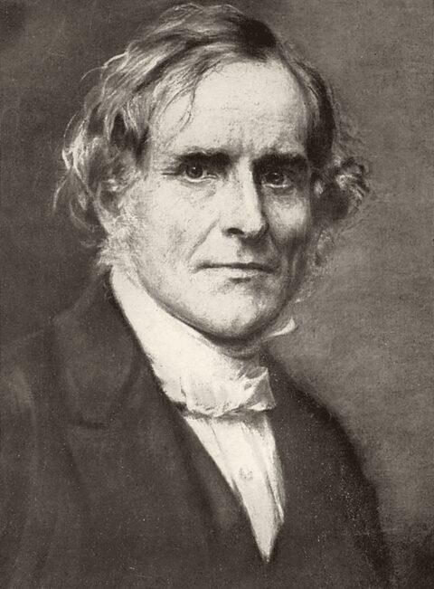

His Life

Frederick Denison Maurice (1805–1872) was a priest of the Church of England, a teacher, and a founder of institutions, but above all a theologian. His lifelong conviction was that the Kingdom of Christ is neither a hope deferred to the future nor the property of a religious party, but the present truth about every human being.
A divided household
Maurice was born on 29 August 1805 at Normanston, near Lowestoft in Suffolk, the son of Michael Maurice, a Unitarian minister. He grew up in a household divided by religion, as his mother and sisters left their father’s Unitarianism for other forms of faith. The longing for a unity deeper than any party, which runs through all his books, began there.
He went up to Trinity College, Cambridge, in 1823 and later moved to Trinity Hall. With his friend John Sterling he was a leading spirit of the Cambridge Conversazione Society, the “Apostles.” As a Dissenter he could not take his degree, which required subscription to the Thirty-Nine Articles. He went instead to London and to literary journalism, and for a time edited the Athenaeum.
Into the Church of England
Under the influence of Coleridge, and after long struggle, Maurice came to find in the creeds of the Church not a set of opinions but a witness to God’s own acts. He was baptized into the Church of England in 1831, studied at Exeter College, Oxford, and was ordained in 1834. After a country curacy he became chaplain of Guy’s Hospital in London in 1836.
There he wrote The Kingdom of Christ, issued through 1837 as a series of letters to a Quaker and collected at the end of that year as a book dated 1838. It argued that the Church is not a sect alongside other sects but the witness to a universal society already constituted by God in Christ, and that each of the parties that divided Christians held some truth which only that larger unity could keep safe.
King’s College and Lincoln’s Inn
In 1840 Maurice became professor of English literature and history at King’s College, London, and in 1846 professor of theology. In the same year he was appointed chaplain of Lincoln’s Inn, where he preached to lawyers and their families for fourteen years; many of the books in this library began as sermons and lectures in its chapel. His Boyle Lectures of 1845–46 became The Religions of the World.
1848, the year of revolutions, drew him into public life. That May, with John Malcolm Ludlow and Charles Kingsley, he began the weekly Politics for the People, the start of the movement that came to be called Christian Socialism. From 1850 the group set up working men’s co-operative associations, beginning with a tailors’ association, and issued the Tracts on Christian Socialism. In 1848, too, he helped to found Queen’s College in Harley Street, one of the first colleges for the higher education of women, and preached his sermons on The Lord’s Prayer while thrones were falling across Europe.
Dismissal
In 1853 Maurice published his Theological Essays. In the concluding essay he argued that “eternal” in the New Testament describes the life of God himself, not endless duration, and that eternal life is to know God. The Council of King’s College resolved that his doctrines were dangerous and that his continued connection with the college would be detrimental, and he was forced to leave. Tennyson, to whom the book was dedicated, wrote to invite him to the Isle of Wight in the verses “To the Rev. F. D. Maurice.”
Maurice’s answer was to keep teaching. In 1854 he founded the Working Men’s College in London and became its first principal, and the same year he preached and published The Doctrine of Sacrifice. His Sunday-morning lectures to a class of students there became The Epistles of St. John (1857). His controversy with Henry Mansel over the limits of religious knowledge produced What is Revelation? (1859).
Last years
In 1860 he left Lincoln’s Inn for the chapel of St Peter’s, Vere Street. In 1866 Cambridge, where as a young Dissenter he had been unable to take his degree, elected him Knightbridge Professor of Moral Philosophy, and from 1870 he was also incumbent of St Edward’s church there. He died in London on 1 April 1872 and was buried in Highgate Cemetery.
Maurice was never the founder of a school, and would have refused to be. But his influence ran through the Christian social movement, through Anglican theology in the century after him, and through many who never read him. The Church of England and the Episcopal Church remember him on 1 April.
1805 Born 29 August at Normanston, Suffolk.
1823 Enters Trinity College, Cambridge.
1831 Baptized into the Church of England.
1834 Ordained; curate of Bubbenhall, Warwickshire.
1836 Chaplain of Guy’s Hospital, London.
1837 Letters to a Quaker, collected as The Kingdom of Christ (dated 1838).
1840 Professor of English literature and history, King’s College, London.
1846 Professor of theology; chaplain of Lincoln’s Inn.
1848 Politics for the People, with Ludlow and Kingsley; Queen’s College, Harley Street, founded.
1850 Working men’s co-operative associations; Tracts on Christian Socialism.
1853 Theological Essays; forced to leave King’s College.
1854 Founds the Working Men’s College.
1860 Incumbent of St Peter’s, Vere Street.
1866 Knightbridge Professor of Moral Philosophy, Cambridge.
1872 Dies in London, 1 April.
Further reading
- Frederick Maurice (ed.), The Life of Frederick Denison Maurice, Chiefly Told in His Own Letters, 2 vols (1884).
- A. M. Ramsey, F. D. Maurice and the Conflicts of Modern Theology (1951).
His books in this library
- 1838The Kingdom of Christ, Volume I
- 1838The Kingdom of Christ, Volume II
- 1847The Religions of the World and Their Relations to Christianity
- 1848The Lord's Prayer
- 1853Theological Essays
- 1854The Doctrine of Sacrifice Deduced from the Scriptures
- 1854The Unity of the New Testament
- 1857The Epistles of St. John
- 1859What is Revelation?
- 1861Lectures on the Apocalypse
- 1864The Gospel of the Kingdom of Heaven
- 1873Sermons Preached in Country Churches
- Sermons Preached in Lincoln's Inn Chapel, Volume I
- Sermons Preached in Lincoln's Inn Chapel, Volume II